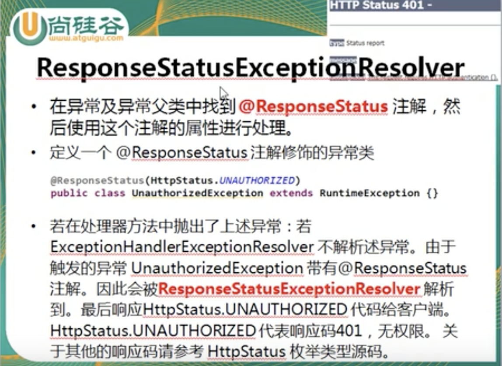

SpingBoot
Table of Contents
- 1. WEB
- 2. 缓存
- 3. 调度
- 4. 配置
- 5. Async
- 6. 工具
- 7. 实践
- 8. 参考
Table of Contents
- 1. WEB
- 2. 缓存
- 3. 调度
- 4. 配置
- 5. Async
- 6. 工具
- 7. 实践
- 8. 参考
| Author | Hao Ruan (haoru@cisco.com) |
| Date | 2019-07-26 10:40:30 |
1 WEB
1.1 静态资源路径
classpath:/META-INF/resources/classpath:/resources/classpath:/static/classpath:/public/- 当前项目的根路径(
/)
1.2 Spring MVC 原理


- 用户发送请求到前端控制器(DispatcherServlet)，前端控制器收到请求后自己不进行处理，而是委托给其他的解析器进行处理，作为统一访问点，进行全局的流程控制
- 前端控制器请求 HandlerMapping 查找 Handler ，返回 HandlerExecutionChain 对象（包含一个 Handler 对象，即 Controller ，和多个 HandlerInterceptor 拦截器）对象， 通过这种策略模式，很容易添加新的映射策略（这个过程可以根据 xml 配置或注解进行查找）
- HandlerAdapter 将会把处理器包装为适配器，从而支持多种类型的处理器，即适配器设计模式的应用，从而很容易支持很多类型的处理器
- 处理器适配器去执行 Handler ，将会根据适配的结果调用真正的处理器的功能处理方法，完成功能处理，并返回一个 ModelAndView 对象
- 处理器适配器向前端控制器返回ModelAndView，ModelAndView是springmvc框架的一个底层对象，包括 Model 和 View
- 前端控制器请求 ViewResolver 进行视图解析，即根据逻辑视图名解析成真正的视图
- View 会根据传进来的 Model 模型数据进行渲染
- 前端控制器向用户响应结果
1.2.1 DispatcherServlet 原理

1.2.2 运行流程


1.2.3 Default Servlet Handler
<mvc:default-servlet-handler/> 将在 SpringMVC 上下文中定义一个 DefaultServletHttpRequestHandler ，它会对进入 DispatcherServlet 的请求进行筛查，
如果发现是没有经过映射的请求，就将该请求交由 WEB 应用服务器默认的 Servlet 处理， 如果不是静态资源的请求，才由 DispatcherServlet 继续处理 。
一般 WEB 应用服务器默认的 Servlet 的名称都是 default 。若所使用的 WEB 服务器的默认 Servlet 名称不是 default ，则需要通过 default-servlet-name 属性显式指定。
1.2.4 @InitBinder
- 由
@InitBinder标识的方法，可以对WebDataBinder对象进行初始化 - WebDataBinder 是 DataBinder 的子类，用于完成由表单字段到 POJO 属性的绑定
@InitBinder方法不能有返回值，它必须声明为void@InitBinder方法的参数通常是 WebDataBinder
1.2.5 HttpMessageConverter<T>

负责将请求信息转换为一个 T 类型的对象，或将 T 类型的对象输出为响应信息。
1.2.5.1 接口方法
canRead
指定转换器可以读取的对象类型，即是否可将请求信息转换为 T 类型的对象
canWrite
指定是否可将 T 类型的对象写到响应流中
read
将请求信息转为 T 类型对象
write
将 T 类型对象写到响应流
1.2.5.2 使用方式
- 使用
@RequestBody/@ResponseBody对处理方法进行标注 - 使用
HttpEntity<T>/ResponseEntity<T>作为入参或返回值
1.2.5.3 原理
Spring 首先根据请求头选择匹配的 HttpMessageConverter ，进而根据泛型类型过滤匹配的 HttpMessageConverter ，若找不到可用的 converter 则报错。
1.2.6 使用 ServletAPI 作为 Handler 入参
MVC 的 Handler 方法可以接受的 ServletAPI 类型的参数，具体可参考：
org.springframework.web.servlet.mvc.method.annotation.ServletRequestMethodArgumentResolver.resolveArgument/4
常见的有：
- HttpServletRequest
- HttpServletResponse
- HttpSession
- Principal
- Locale
- InputStream
- OutputStream
- Reader
- Writer
1.2.7 HiddenHttpMethodFilter
浏览器表单只支持 GET 与 POST 请求，而 DELETE，PUT 等方法并不支持，Spring3.0 添加了一个过滤器，可以将这些请求转换为标准的 HTTP 方法， 使得支持 GET，POST，PUT 与 DELETE 请求。
1.2.8 拦截器
1.2.8.1 执行流程
1.2.9 异常处理
1.2.9.1 ExceptionHandlerExceptionResolver
1.2.9.1.1 ResponseStatusExceptionResolver

1.2.10 ContentNegotiatingViewResovler

ContentNegotiatingViewResolver组合所有视图解析器- 可以自定义一个视图解析器，
ContentNegotiatingViewResolver自动将其整合进来
2 缓存
2.1 JSR107

定义了 5 个核心接口:
CachingProvider
创建，配置，获取，管理和控制
CacheManager，一个应用运行期间可以访问多个CacheManagerCacheManager
创建，配置，获取，管理和控制
Cache，一个CacheManager仅被一个CachingProvider拥有Cache
类似
Map的数据结构，一个 Cache 仅被一个CacheManager拥有Entry
存储在
Cache中的 k-v 对Expiry
Cache中条目的有效期，可以通过ExpiryPolicy设置
2.2 Springboot 缓存抽象
- Cache
缓存接口，定义缓存操作。实现有：RedisCache, EhCacheCache, ConcurrentMapCache 等
- CacheManager
缓存管理器
- @Cacheable
根据方法的请求参数对其结果进行缓存
- @CacheEvict
清空缓存
- @CachePut
更新缓存
- @EnableCaching
开启基于注解的缓存
- keyGenerator
key 生成策略
- serialize
value 序列化策略
2.3 示例代码
3 调度
3.1 示例工程
3.2 每隔固定时间执行
@Scheduled(fixedRate=5000)
3.3 指定任务间隔
// specify the interval between invocations measured // from the completion of the task @Scheduled(fixedDelay=5000)
3.4 UNIX Cron 风格
@Scheduled(cron="0 28 11 ? * *") // 每天 11 点 28 分 执行 @Scheduled(cron="0 */5 14,18 * * ?") // 每天 14/18 点整，每隔 5 分钟执行 @Scheduled(cron="0 15 10 ? * 1-6") // 每个月周一至周六 10:15 执行 @Scheduled(cron="0 0 2 ? * 6L") // 每个月最后一个周六凌晨 2 点执行 @Scheduled(cron="0 0 2 LW * ?") // 每个月最后一个工作日凌晨 2 点执行 @Scheduled(cron="0 0 2-4 ? * 1#1") // 每个月第一个周一凌晨 2 点至 4 点期间，每隔整点执行
4 配置
4.1 自动配置原理
SpringBoot 启动时加载自动配置类
扫描所有 jar 包类路径下的
MATA-INF/spring.factories文件（比如spring-boot-autoconfigure-1.5.15.RELEASE.jar/META-INF/spring.factories）， 文件中org.springframework.boot.autoconfigure.EnableAutoConfiguration对应的所有的自动配置类将进行自动配置。自动配置类根据配置属性进行配置（创建 bean）
所有在配置文件中能配置的属性在
xxxProperties类中封装，比如@EnableConfigurationProperties(RedisProperties.class)
4.1.1 自动配置报告
启用 debug=true 属性，打印自动配合报告，这样就可以知道哪些自动配置类生效。
4.2 @ConfigurationProperties 与 @Value 的区别
| @ConfigurationProperties | @Value | |
| 功能 | 批量注入配置文件属性 | 单个指定 |
| 松散绑定(语法) | ✓ | ✗ |
| spEL | ✗ | ✓ |
| JSR303 校验 | ✓ | ✗ |
| 复杂类型 | ✓ | ✗ |
4.3 Profile
4.3.1 主配置文件激活
主配置文件: application.properties
spring.profiles.active=<profile1>,<profile2>
4.3.2 命令行激活
java -jar spring-boot-02-config-0.0.1-SNAPSHOT.jar --spring.profiles.active=<profile>
4.3.3 虚拟机参数激活
-Dspring.profiles.active=
4.4 配置文件搜索顺序
file:configfile:/classpath:/configclasspath:/
项目打包好了以后，可以使用命令行参数的形式，启动项目的时候来指定配置文件的新位置: （指定配置文件和默认的配置文件会共同起作用）
java -jar project-0.0.1-SNAPSHOT.jar --spring.config.location=/path/to/application.properties
4.5 配置文件占位符
4.6 @Conditional 派生注解
| @ConditionalOnJava | 系统的java版本是否符合要求 |
| @ConditionalOnBean | 容器中存在指定Bean |
| @ConditionalOnMissBean | 容器中不存在指定Bean |
| @ConditionalOnExpression | 满足spEL表达式 |
| @ConditionalOnClass | 系统中有指定的类 |
| @ConditionalOnMissClass | 系统中没有指定的类 |
| @ConditionalOnSingleCandidate | 容器中只有一个指定的Bean,或者这个Bean是首选Bean |
| @ConditionalOnProperty | 系统中指定的属性是否有指定的值 |
| @ConditionalOnResource | 类路径下是否存在指定的资源文件 |
| @ConditionalOnWebApplication | 当前是web环境 |
| @ConditionalOnNotWebApplication | 当前不是web环境 |
| @ConditionalOnJndi | JNDI存在指定项 |
5 Async
5.1 异常统一捕获
如果需要统一进行异常捕获，可以实现 AsyncConfigurer 接口，
getAsyncExecutor 方法返回的 Executor 对象用于处理异步方法调用，
getAsyncUncaughtExceptionHandler 方法返回的对象捕获异步调用期间产生的异常，
当且仅当异步调用方法的返回类型为 void 。
@EnableAsync @Configuration public class AsyncConfiguration implements AsyncConfigurer { @Override public Executor getAsyncExecutor() { ThreadPoolTaskExecutor taskExecutor = new ThreadPoolTaskExecutor(); taskExecutor.setCorePoolSize(4); taskExecutor.setMaxPoolSize(8); taskExecutor.setQueueCapacity(32); taskExecutor.initialize(); return taskExecutor; } @Override public AsyncUncaughtExceptionHandler getAsyncUncaughtExceptionHandler() { return new SimpleAsyncUncaughtExceptionHandler(); } }
6 工具
6.1 JacksonXML
6.1.1 示例数据
<root k6="6"> <k1>str</k1> <k-2>2</k-2> <k3> <ki>1</ki> <ki>2</ki> </k3> <k5>5-1</k5> <k5>5-2</k5> <k9><![CDATA[中<a>文]]></k9> </root>
6.1.2 pom 配置
<dependency> <groupId>com.fasterxml.jackson.dataformat</groupId> <artifactId>jackson-dataformat-xml</artifactId> </dependency>
6.1.3 DTO
import java.util.*; import com.fasterxml.jackson.dataformat.xml.annotation.*; import lombok.Data; @Data @JacksonXmlRootElement(localName="root") public class RootXml { private String k1; @JacksonXmlProperty(localName="k-2") private Integer k2; @JacksonXmlProperty(localName="k3") @JacksonXmlElementWrapper(useWrapping=true) private Collection<String> kis; @JacksonXmlElementWrapper(useWrapping=false) private Collection<String> k5; @JacksonXmlProperty(isAttribute=true) private Integer k6; @JacksonXmlCData(value=true) // 序列化时是否总是使用 CDATA 块 private String k9; }
6.1.4 Controller
@PostMapping(path="/xml", consumes=MediaType.APPLICATION_XML_VALUE) public void test(@RequestBody RootXml xml) { }
6.2 MapStruct
6.2.1 pom 配置
6.2.1.1 properties
<properties> <org.mapstruct.version>1.2.0.Final</org.mapstruct.version> </properties>
6.2.1.2 dependency
<!-- 针对 swagger 的 workaround --> <dependency> <groupId>io.springfox</groupId> <artifactId>springfox-swagger2</artifactId> <exclusions> <exclusion> <groupId>org.mapstruct</groupId> <artifactId>mapstruct</artifactId> </exclusion> </exclusions> </dependency> <dependency> <groupId>org.mapstruct</groupId> <artifactId>mapstruct-jdk8</artifactId> <!-- use mapstruct-jdk8 for Java 8 or higher --> <version>${org.mapstruct.version}</version> </dependency> <dependency> <groupId>org.mapstruct</groupId> <artifactId>mapstruct-processor</artifactId> <version>${org.mapstruct.version}</version> <scope>provided</scope> </dependency>
6.2.1.3 plugin
<!-- 兼容 lombok --> <plugin> <groupId>org.apache.maven.plugins</groupId> <artifactId>maven-compiler-plugin</artifactId> </plugin>
6.2.2 Mapper 接口
@Mapper(unmappedTargetPolicy=ReportingPolicy.IGNORE) public interface ClassAMapper { ClassAMapper MAPPER = Mappers.getMapper( ClassAMapper.class ); @Mappings({ @Mapping(source="id", target="ID"), @Mapping(source="name", target="NAME") }) ClassA from(ClassB obj); default ClassA from(ClassC obj) { // Custmization } }
6.2.3 调用
ClassB objB = new ClassB(); ClassC objC = new ClassC(); ClassA.MAPPER.from(objB); ClassA.MAPPER.from(objC);
6.3 MapperFactory
6.3.1 配置
<dependency> <groupId>ma.glasnost.orika</groupId> <artifactId>orika-core</artifactId> <version>1.5.2</version><!-- or latest version --> </dependency>
@Configuration public class MapperConfig extends ConfigurableMapper { @Bean public MapperFactory mapperFactory(){ MapperFactory factory = new DefaultMapperFactory.Builder().build(); factory.classMap(NetworkDto.class, Network.class) .field("group.id", "groupId") .mapNulls(false) .byDefault() .register(); return factory; } }
6.3.2 使用
class NetworkBo { @Autowired private MapperFactory mapperFactory; public void handle() { NetworkDto dto = ...; Network network = ...; mapperFactory.getMapperFacade().map(dto, network); } }
6.3.3 传送门
7 实践
7.1 Restful Service (MVC)
7.1.1 WebApplicationInitializer
实现 WebApplicationInitializer 接口便可以实现等同于对 web.xml 进行配置
7.1.2 Controller
@RestController @RequestMapping("/{userId}/bookmarks") class BookmarkRestController { @PostMapping ResponseEntity<?> add(@PathVariable String userId, @RequestBody Bookmark input) { return ResponseEntity.noContent().build(); } }
7.1.3 HttpMessageConverter
对每个 HTTP 请求，Spring MVC 将遍历所有配置的 HttpMessageConverter 对象， 直到找到一个合适的对象可以将返回的 POJO 转换成 Accept header 中指定的 content type 。
Spring Boot 会自动组装一个可以转换成 JSON 类型的 HttpMessageConverter 对象。
HttpMessageConverter 工作于两个方向：
- 请求（ content-type => Java object ）
- 响应（ Java object => content-type ）
7.1.4 异常处理
7.1.4.1 异常级别
正常情况下，任何未被处理的异常将导致服务器返回 HTTP 500 Response 。
自定义的异常可以通过添加 @ResponseStatus 注解从而使用指定的 status code 。
@ResponseStatus(value=HttpStatus.NOT_FOUND, reason="No such Order") // 404 public class OrderNotFoundException extends RuntimeException { // TODO }
@RequestMapping(value="/orders/{id}", method=GET) public String showOrder(@PathVariable("id") long id, Model model) { Order order = orderRepository.findOrderById(id); if (order == null) throw new OrderNotFoundException(id); model.addAttribute(order); return "orderDetail"; }
7.1.4.2 控制器级别
使用 @ExceptionHandler 注解处理同一个控制器中抛出的异常，这种方式的优点：
- 可以处理没有被
@ResponseStatus注解过的异常 - 可以将用户重定向到专门的错误页面
- 组装一个完全定制化的 error response
@Controller public class ExceptionHandlingController { // @RequestHandler methods that maybe throw exception ... // Exception handling methods: // Convert a predefined exception to an HTTP Status code @ResponseStatus(value=HttpStatus.CONFLICT, reason="Data integrity violation") // 409 @ExceptionHandler(DataIntegrityViolationException.class) public void conflict() { // TODO } // Specify name of a specific view that will be used to display the error: @ExceptionHandler({SQLException.class, DataAccessException.class}) public String databaseError() { // Nothing to do. Returns the logical view name of an error page, passed // to the view-resolver(s) in usual way. return "databaseError"; } // Total control - setup a model and return the view name yourself. Or // consider subclassing ExceptionHandlerExceptionResolver. @ExceptionHandler(Exception.class) public ModelAndView handleError(HttpServletRequest req, Exception ex) { logger.error("Request: " + req.getRequestURL() + " raised " + ex); ModelAndView mav = new ModelAndView(); mav.addObject("exception", ex); mav.addObject("url", req.getRequestURL()); mav.setViewName("error"); return mav; } }
7.1.4.3 全局级别
任何标注 @ControllerAdvice / @RestControllerAdvice 注解的类支持 3 种类型的方法：
- Exception handling methods annotated with
@ExceptionHandler - Model enhancement methods (for adding additional data to the model) annotated with
@ModelAttribute - Binder initialization methods (used for configuring form-handling) annotated with
@InitBinder
@ControllerAdvice class GlobalControllerExceptionHandler { @ResponseStatus(HttpStatus.CONFLICT) // 409 @ExceptionHandler(DataIntegrityViolationException.class) public void handleConflict() { // Nothing to do } }
7.1.4.3.1 重新抛出
@ControllerAdvice class GlobalDefaultExceptionHandler { public static final String DEFAULT_ERROR_VIEW = "error"; @ExceptionHandler(value = Exception.class) public ModelAndView defaultErrorHandler(HttpServletRequest req, Exception e) throws Exception { // If the exception is annotated with @ResponseStatus rethrow it and let // the framework handle it - like the OrderNotFoundException example // at the start of this post. // AnnotationUtils is a Spring Framework utility class. if (AnnotationUtils.findAnnotation(e.getClass(), ResponseStatus.class) != null) throw e; // Otherwise setup and send the user to a default error-view. ModelAndView mav = new ModelAndView(); mav.addObject("exception", e); mav.addObject("url", req.getRequestURL()); mav.setViewName(DEFAULT_ERROR_VIEW); return mav; } }
7.2 Application Event
7.2.1 Event
@ToString public class Event extends ApplicationEvent { private static final long serialVersionUID = 1L; @Getter private String message; public Event(Object source, String message) { super(source); this.message = message; } }
7.2.2 Listener
@Component @Slf4j public class Listener { @EventListener public void handlerEvent(Event event) { log.info("Receive event: {}", event); } }
7.2.3 Publisher
@Service @Slf4j public class Publisher { @Autowired private ApplicationContext applicationContext; public void publish(String message) { log.info("Sending message: {}", message); applicationContext.publishEvent(new Event(this, message)); } }
7.2.4 自定义 applicationEventMulticaster
@Bean(name="applicationEventMulticaster") public ApplicationEventMulticaster simpleApplicationEventMulticaster() { SimpleApplicationEventMulticaster eventMulticaster = new SimpleApplicationEventMulticaster(); eventMulticaster.setTaskExecutor(new SimpleAsyncTaskExecutor()); return eventMulticaster; }
7.2.5 常见 SpringApplicationEvent
- ApplicationEnvironmentPreparedEvent
- ApplicationFailedEvent
- ApplicationPreparedEvent
- ApplicationReadyEvent
- ApplicationStartingEvent
7.3 Springboot Test
7.3.1 样板文件
@RunWith(SpringRunner.class) @SpringBootTest(SpringBootTest.WebEnvironment.MOCK, classes=XxxApplication.class) @AutoConfigureMockMvc @ActiveProfiles("xxx") @TestPropertySource(locations="classpath:xxx.properties") public class ApplicationTest { @Test public void test() { // TODO } }
7.3.2 MockMvc
@Autowired private MockMvc mockMvc; @Test public void testHttpMethodWithPathVariable() throws Exception { mockMvc.perform(MockMvcRequestBuilders.get("/hello/{name}", "John")) .andDo(MockMvcResultHandlers.print()) // print request and response .andExpect(MockMvcResultMatchers.status().isOk()) .andExpect(MockMvcResultMatchers.content().contentType("application/json;charset=UTF-8")) .andExpect(MockMvcResultMatchers.jsonPath("$.message").value("Hello World John!!!")); } @Test public void testHttpMethodWithQueryParameters() throws Exception { this.mockMvc.perform(get("/greetWithQueryVariable") .param("name", "John Doe") .param("age", "30")) .andDo(MockMvcResultHandlers.print()) .andExpect(MockMvcResultMatchers.status().isOk()) .andExpect(MockMvcResultMatchers.content().contentType("application/json;charset=UTF-8")) .andExpect(MockMvcResultMatchers.jsonPath("$.message").value("Hello World John Doe!!!")); }
7.3.3 Hamcrest
import static org.hamcrest.Matchers.*;
import static org.junit.Assert.assertThat;
7.3.3.1 Core API
- is
- not
- assertThat(str, anyOf(startsWith(start), containsString(end)))
- assertThat(str, allOf(startsWith(start), containsString(end)))
7.3.3.2 Object Matcher
- hasToString(str)
- To assert that the `toString` method of an Object returns a specified `str`
- typeCompatibleWith(clazz)
- check that one class is a sub-class of another
- (no term)
- sameInstance
- (no term)
- instanceOf
7.3.3.3 Bean Matcher
- hasProperty
- samePropertyValuesAs
7.3.3.4 Collection Matcher
- empty
- hasSize
- arrayWithSize
- containsInAnyOrder
- in given order
- hasItemInArray
- isOneOf / isIn
- arrayContainingInAnyOrder
- arrayContaining
- hasKey
- hasValue
- hasEntry
- assertThat(list, everyItem(greaterThan(0)))
7.3.3.5 Number Matcher
- greaterThan
- greaterThanOrEqualTo
- lessThan
- lessThanOrEqualTo
- closeTo(pivot, deviation)
7.3.3.6 Text Matcher
- isEmptyString
- isEmptyOrNullString
- equalToIgnoringWhiteSpace
- stringContainsInOrder
- equalToIgnoringCase
- containsString(str)
- startsWith(str)
- endsWith(str)
- notNullValue
7.3.4 Mockito
Mock 测试就是在测试过程中，对于某些不容易构造（如 HttpServletRequest 必须在Servlet 容器中才能构造出来） 或者不容易获取比较复杂的对象（如 JDBC 中的ResultSet 对象），用一个虚拟的对象（Mock 对象）来创建以便测试的测试方法。
Mock 最大的功能是把单元测试的耦合分解开，如果代码对另一个类或者接口有依赖，它能够模拟这些依赖，并帮助验证所调用的依赖的行为。
7.3.4.1 Mock 与 Stub 的区别
Mock 不是 Stub，两者是有区别的：
- 前者被称为 mockist TDD，而后者一般称为 classic TDD
- 前者是基于行为的验证（behavior verification），后者是基于状态的验证 （state verification）
- 前者使用的是模拟的对象，而后者使用的是真实的对象
7.3.4.2 验证行为
//Let's import Mockito statically so that the code looks clearer import static org.mockito.Mockito.*; //mock creation List mockedList = mock(List.class); //using mock object mockedList.add("one"); mockedList.clear(); //verification verify(mockedList).add("one"); verify(mockedList).clear();
一旦创建 mock 将会 记得所有的交互 。可以选择验证感兴趣的任何交互。
7.3.4.3 打桩
//You can mock concrete classes, not just interfaces LinkedList mockedList = mock(LinkedList.class); //stubbing when(mockedList.get(0)).thenReturn("first"); when(mockedList.get(1)).thenThrow(new RuntimeException()); //following prints "first" System.out.println(mockedList.get(0)); //following throws runtime exception System.out.println(mockedList.get(1)); //following prints "null" because get(999) was not stubbed System.out.println(mockedList.get(999));
7.3.4.4 连续调用打桩对象
when(mock.someMethod("some arg")) .thenThrow(new RuntimeException()) .thenReturn("foo"); //First call: throws runtime exception: mock.someMethod("some arg"); //Second call: prints "foo" System.out.println(mock.someMethod("some arg")); //Any consecutive call: prints "foo" as well (last stubbing wins). System.out.println(mock.someMethod("some arg"));
when(mock.someMethod("some arg")) .thenReturn("one", "two", "three");
7.3.4.5 参数匹配器
//stubbing using built-in anyInt() argument matcher when(mockedList.get(anyInt())).thenReturn("element"); //stubbing using custom matcher (let's say isValid() returns your own matcher implementation): when(mockedList.contains(argThat(isValid()))).thenReturn("element"); //following prints "element" System.out.println(mockedList.get(999)); //you can also verify using an argument matcher verify(mockedList).get(anyInt());
7.3.4.6 调用次数
//using mock mockedList.add("once"); mockedList.add("twice"); mockedList.add("twice"); mockedList.add("three times"); mockedList.add("three times"); mockedList.add("three times"); //following two verifications work exactly the same - times(1) is used by default verify(mockedList).add("once"); verify(mockedList, times(1)).add("once"); //exact number of invocations verification verify(mockedList, times(2)).add("twice"); verify(mockedList, times(3)).add("three times"); //verification using never(). never() is an alias to times(0) verify(mockedList, never()).add("never happened"); //verification using atLeast()/atMost() verify(mockedList, atLeastOnce()).add("three times"); verify(mockedList, atLeast(2)).add("five times"); verify(mockedList, atMost(5)).add("three times");
times(1) 是默认的，因此，使用的 times(1) 可以显示的省略
7.3.4.7 处理异常
doThrow(new RuntimeException()).when(mockedList).clear(); //following throws RuntimeException: mockedList.clear();
7.3.4.8 确保不发生交互
//using mocks - only mockOne is interacted mockOne.add("one"); //ordinary verification verify(mockOne).add("one"); //verify that method was never called on a mock verify(mockOne, never()).add("two"); //verify that other mocks were not interacted verifyZeroInteractions(mockTwo, mockThree);
7.3.4.9 寻找多余交互
//using mocks mockedList.add("one"); mockedList.add("two"); verify(mockedList).add("one"); //following verification will fail verifyNoMoreInteractions(mockedList);
7.3.4.10 注解
7.3.4.10.1 启用注解
@RunWith(MockitoJUnitRunner.class) public class MockitoAnnotationTest { }
7.3.4.10.2 @Mock
不使用注解：
@Test public void whenNotUseMockAnnotation_thenCorrect() { List mockList = Mockito.mock(ArrayList.class); mockList.add("one"); Mockito.verify(mockList).add("one"); assertEquals(0, mockList.size()); Mockito.when(mockList.size()).thenReturn(100); assertEquals(100, mockList.size()); }
使用注解：
@Mock List<String> mockedList; @Test public void whenUseMockAnnotation_thenMockIsInjected() { mockedList.add("one"); Mockito.verify(mockedList).add("one"); assertEquals(0, mockedList.size()); Mockito.when(mockedList.size()).thenReturn(100); assertEquals(100, mockedList.size()); }
7.3.4.10.3 @Spy
不使用注解：
@Test public void whenNotUseSpyAnnotation_thenCorrect() { List<String> spyList = Mockito.spy(new ArrayList<String>()); spyList.add("one"); spyList.add("two"); Mockito.verify(spyList).add("one"); Mockito.verify(spyList).add("two"); assertEquals(2, spyList.size()); Mockito.doReturn(100).when(spyList).size(); assertEquals(100, spyList.size()); }
使用注解：
@Spy List<String> spiedList = new ArrayList<String>(); @Test public void whenUseSpyAnnotation_thenSpyIsInjected() { spiedList.add("one"); spiedList.add("two"); Mockito.verify(spiedList).add("one"); Mockito.verify(spiedList).add("two"); assertEquals(2, spiedList.size()); Mockito.doReturn(100).when(spiedList).size(); assertEquals(100, spiedList.size()); }
7.3.4.10.4 @Captor
不使用注解：
@Test public void whenNotUseCaptorAnnotation_thenCorrect() { List mockList = Mockito.mock(List.class); ArgumentCaptor<String> arg = ArgumentCaptor.forClass(String.class); mockList.add("one"); Mockito.verify(mockList).add(arg.capture()); assertEquals("one", arg.getValue()); }
使用注解：
@Mock List mockedList; @Captor ArgumentCaptor argCaptor; @Test public void whenUseCaptorAnnotation_thenTheSam() { mockedList.add("one"); Mockito.verify(mockedList).add(argCaptor.capture()); assertEquals("one", argCaptor.getValue()); }
7.3.4.10.5 @InjectMocks
相当于同时使用 @Spy 和 @Mock
@Mock Map<String, String> wordMap; @InjectMocks MyDictionary dic = new MyDictionary(); @Test public void whenUseInjectMocksAnnotation_thenCorrect() { Mockito.when(wordMap.get("aWord")).thenReturn("aMeaning"); assertEquals("aMeaning", dic.getMeaning("aWord")); }